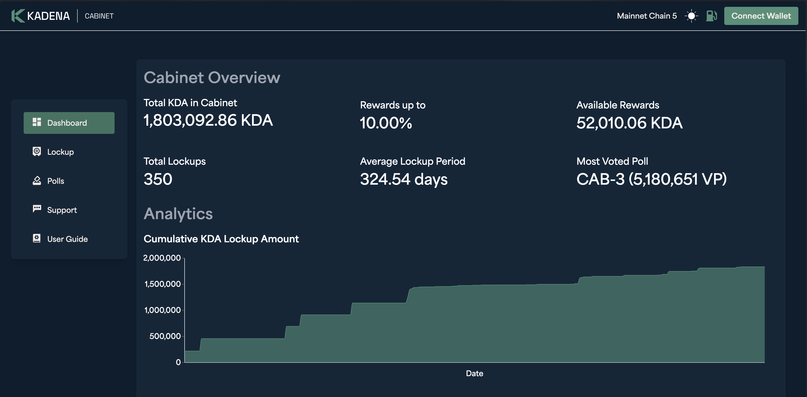
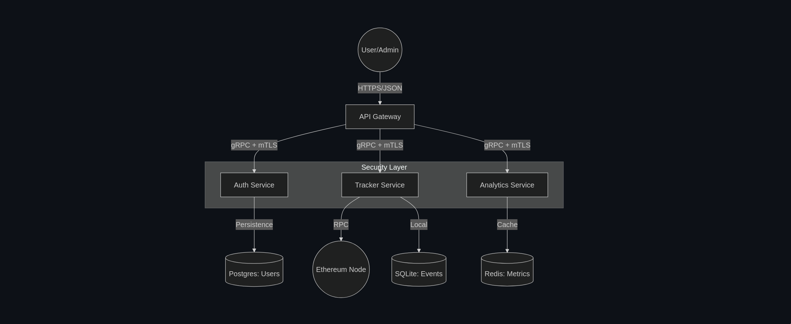
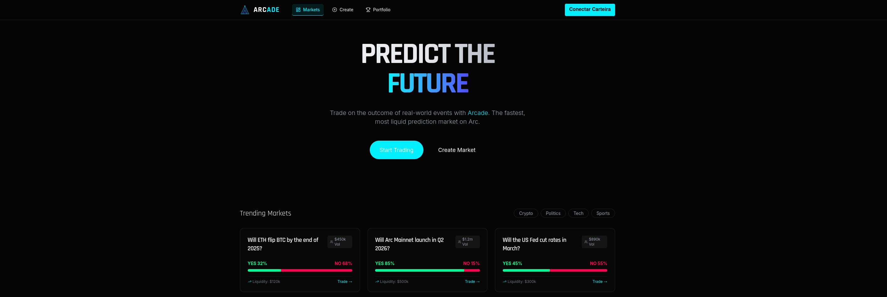
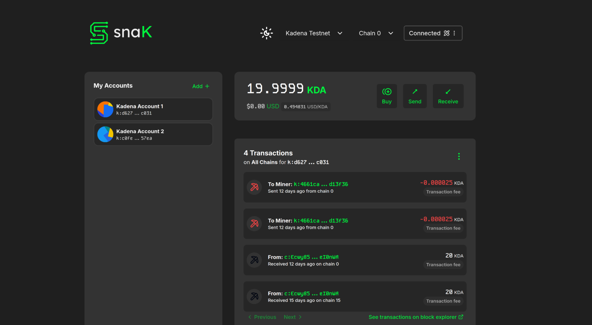
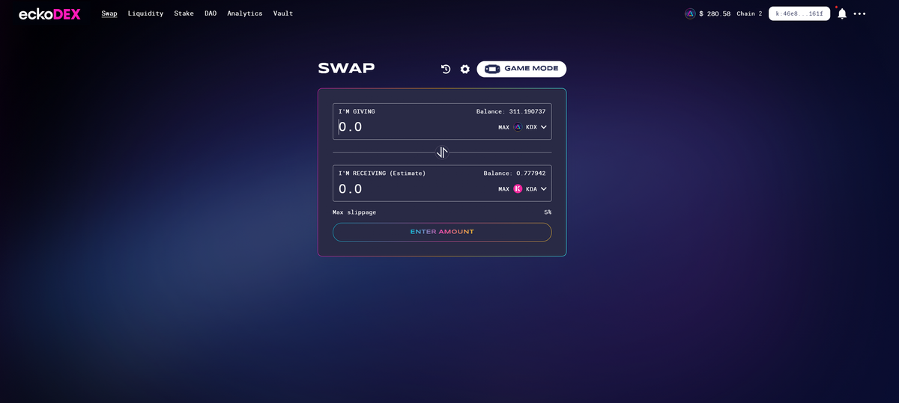
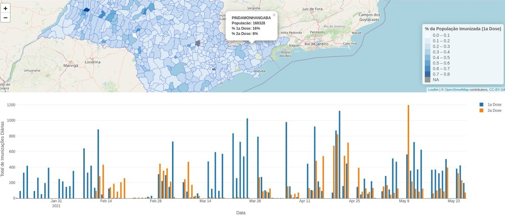
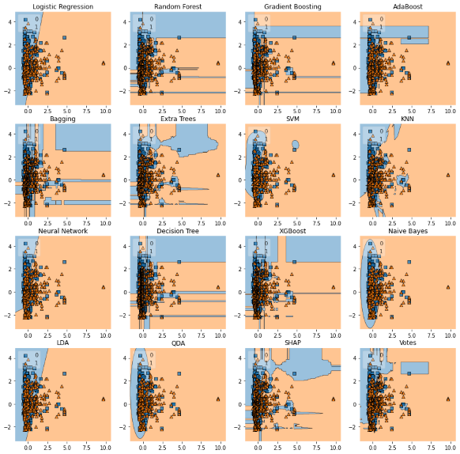

Governance · Kadena
Kadena Cabinet
A governance incentive protocol for the Kadena ecosystem. Built with Pact, TypeScript, and C#.
Selected work · 2020—2026
Protocol engineering, privacy tools, data products, and small programs built to understand how things work.

A governance incentive protocol for the Kadena ecosystem. Built with Pact, TypeScript, and C#.

A high-performance, event-driven microservices system for monitoring Uniswap V3 concentrated-liquidity pools, with Saga orchestration, circuit breakers, checkpointed indexing, and gRPC services.

A prediction-market proof of concept for Arc Testnet, using CPMM liquidity and USDC collateral.

A MetaMask Snap for managing Kadena accounts, transferring tokens across Chainweb, switching networks, and connecting to Kadena applications.
An implementation of stealth addresses for private payments on Solana.

A dynamic liquidity-mining multiplier explored through Brownian-motion simulations and sigmoid tuning.

An R Shiny application developed with PREDICT using geolocated data, time-series regression, and data visualization.

Animated visualization of the moving average of COVID-19 deaths across Brazilian states and municipalities.

An interactive view of character relationships built with named-entity recognition.

A Kaggle notebook classifying passenger survival from the supplied passenger data.
A C program that computes the Mandelbrot set and writes the rendered image in PPM format.
gather.covidPacote do R desenvolvido para obtenção, higienização e padronização automatizada de dados epidemiológicos da COVID-19.
Implementação em C de dicionário indexado utilizando Árvore AVL auto-balanceável, rotações de balanceamento e complexidade logarítmica O(log n).
Algoritmo de geometria computacional implementado em C para cálculo do envoltório convexo de conjuntos de pontos no plano euclidiano.